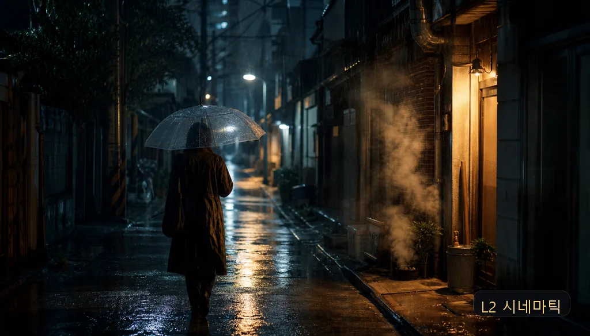
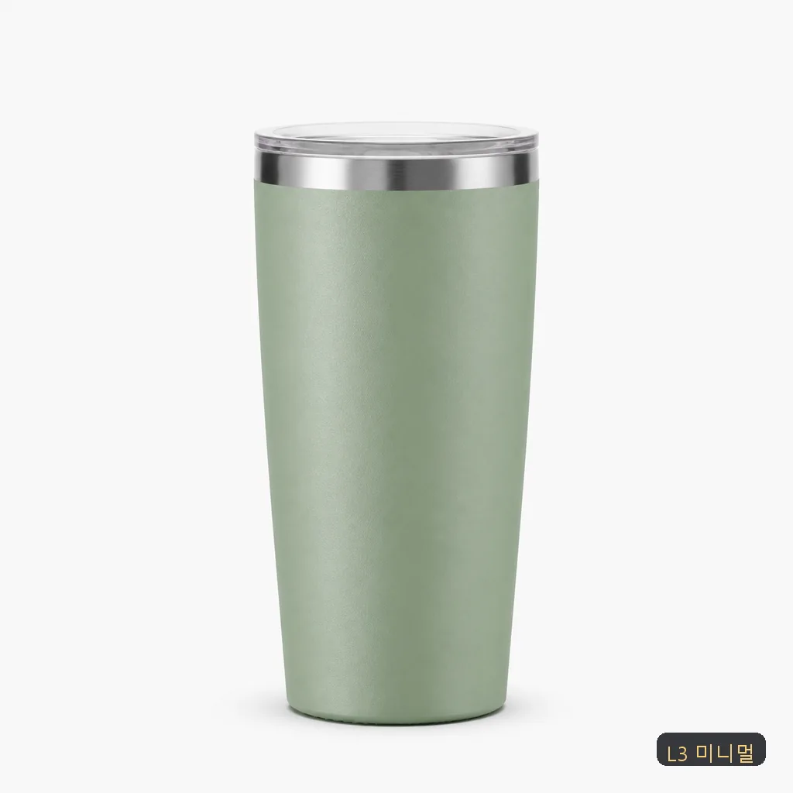
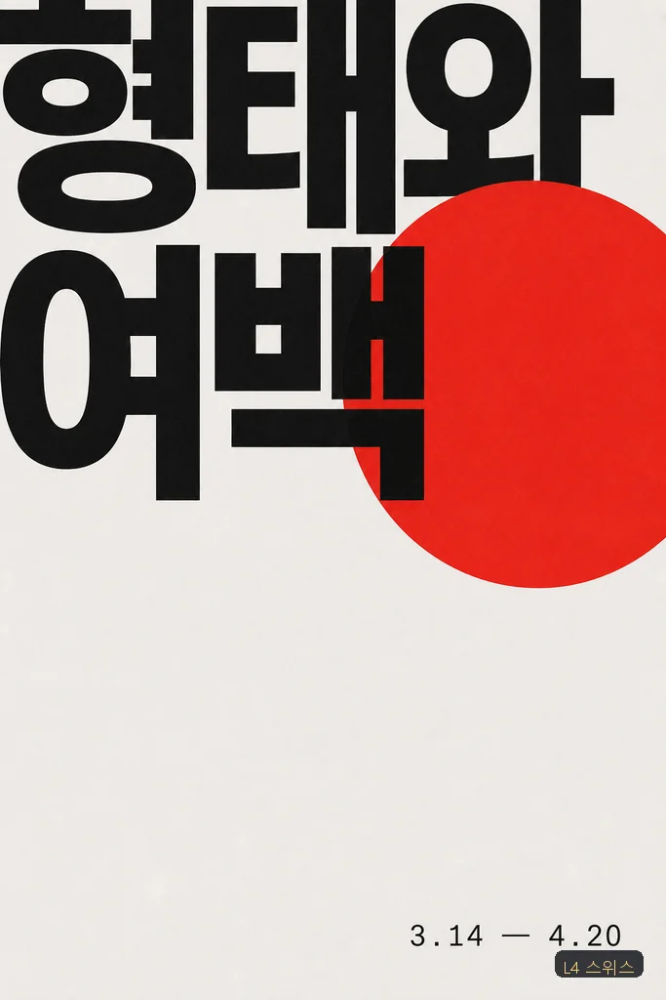
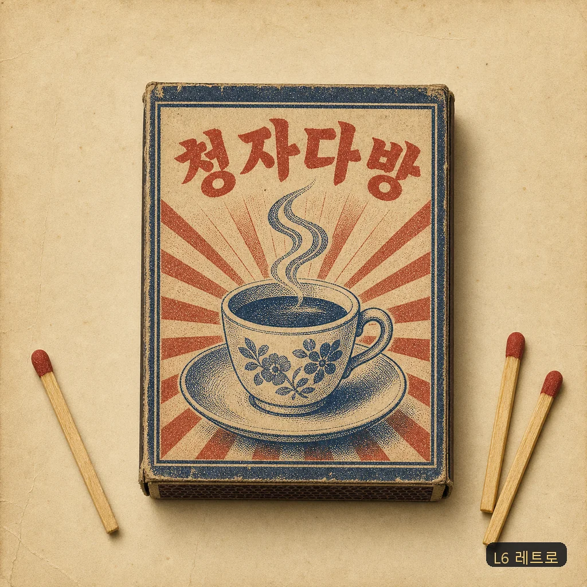
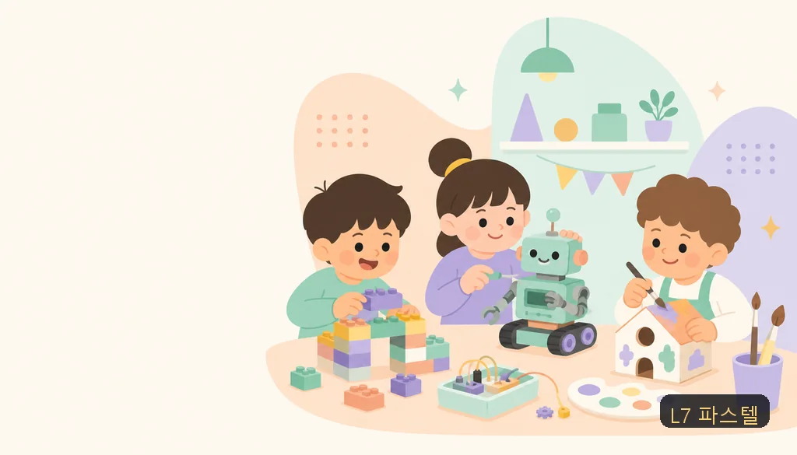
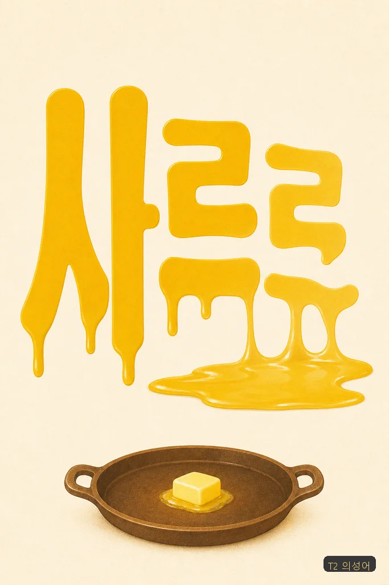
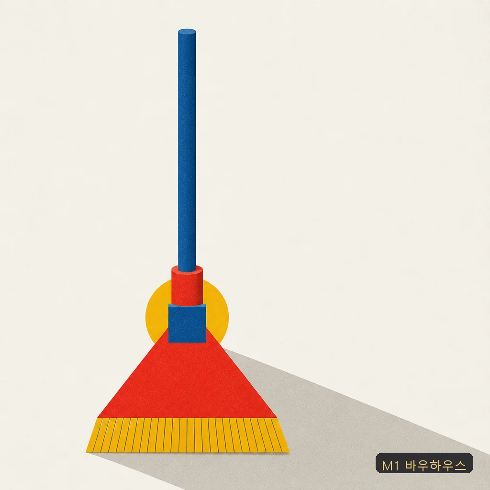
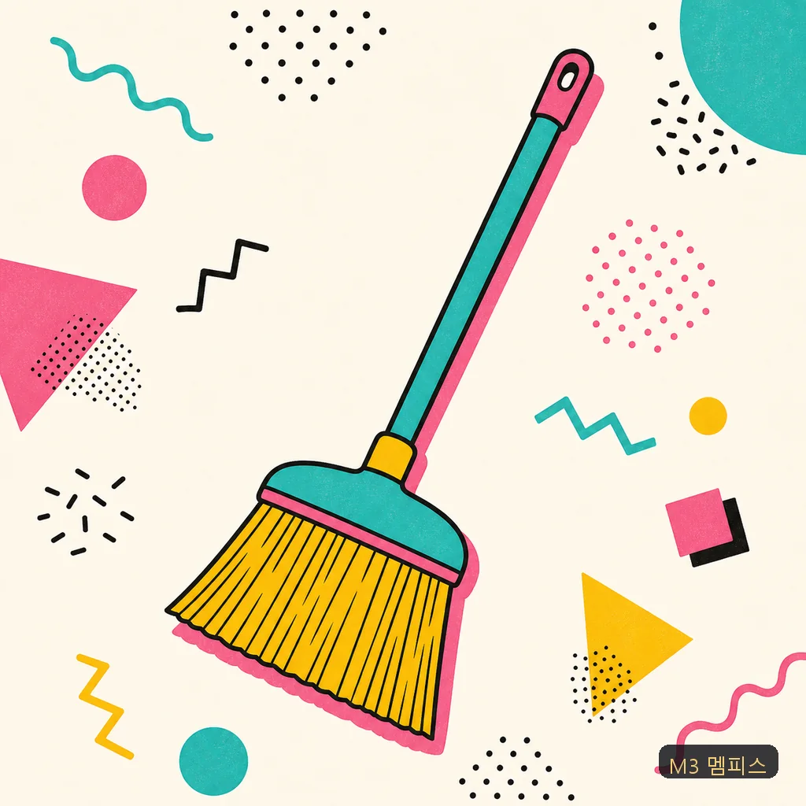
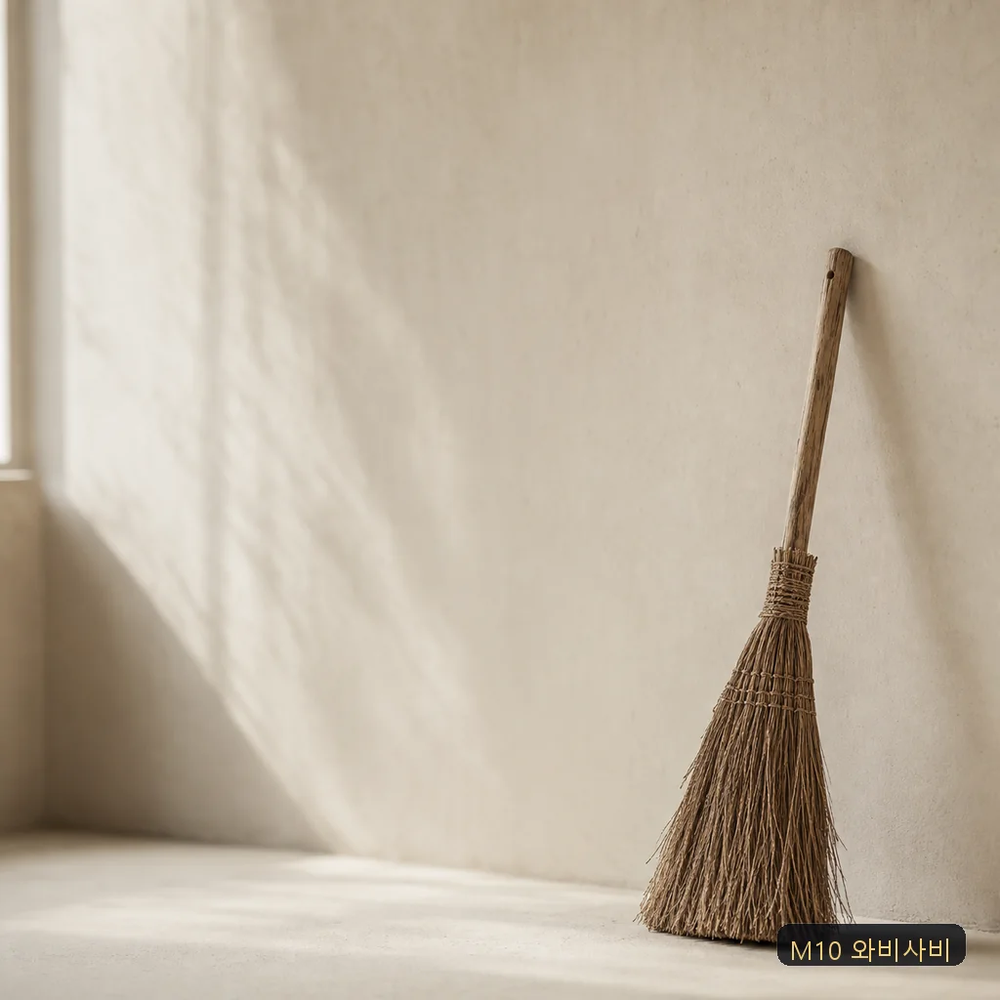
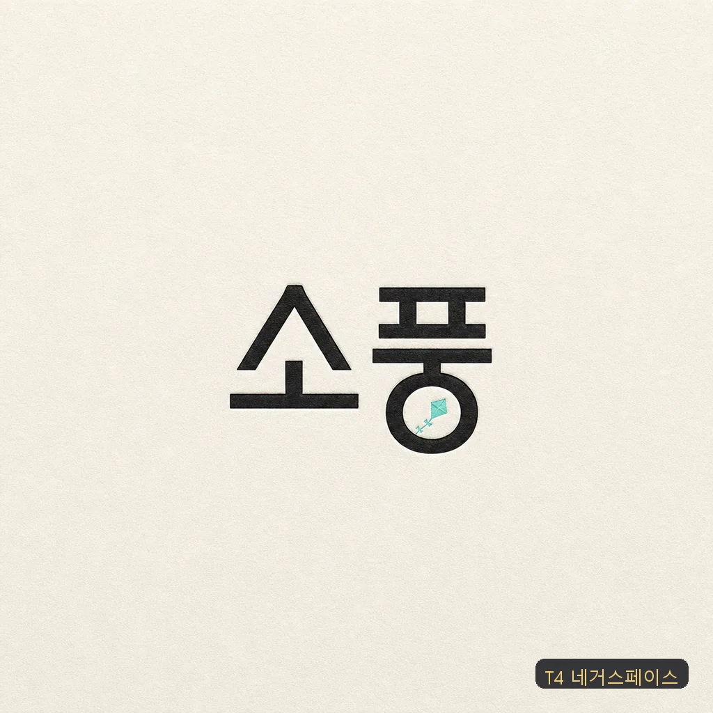

🐾 Claude Code Skill · gpt-image-2 · VOL.2
막연한 한마디를

막연한 한마디를
완성 프롬프트로
"포스터 하나 만들어줘"를 바로 생성에 넣을 완성 한국어 프로덕션 프롬프트로 컴파일한다. 1,000장을 뽑으며 검증한 규칙을 스킬 하나로.
"포스터 하나 만들어줘"를 바로 생성에 넣을 완성 한국어 프로덕션 프롬프트로 컴파일한다. 1,000장을 뽑으며 검증한 규칙을 스킬 하나로.

아래 24컷 전부, 좌하단 칩에 적힌 한마디가 사람이 입력한 전부고, 각 컷 아래 회색 텍스트가 킷이 실제로 모델에 넣은 인입 프롬프트 전문이다. 특히 "빗자루" 세 컷은 입력이 완전히 같고 사조 축(M1/M3/M10)만 다르다. 컴파일 레코드 원본은 examples/showcase.jsonl.














왼쪽은 사람이 친 한 줄 그대로, 오른쪽은 그 한 줄을 킷이 컴파일한 프롬프트다. 하단 칩에 실제 입력이 적혀 있다.


타이포그래피 아트 포스터 — 파도의 에너지를 실은 한글 레터링이 유일한 피사체. Scene: 옅은 포말빛 필드 전면을 거대한 한글 레터링 '파도'가 채우는 구성. letterforms carrying the surge of a breaking wave: thick brush strokes swelling and curling upward with momentum, stroke tips bursting into fine white spray droplets, the baseline rolling like a swell, deep-sea ink gradating to foam white inside each stroke — the lettering is the only subject in the frame, all of the wave's energy living inside the strokes. Camera: 정면 평면 포스터 구성, 레터링이 프레임의 80%를 차지하는 과감한 스케일. Lighting: 균일한 인쇄 광, 획 안쪽에만 깊이감 있는 톤 변화. Color grading: deep sea ink #1D4E89, midnight undertone #101A2E, foam white #F5F8FA, 시안 스프레이 포인트 #5EEAD4. Texture/Medium: 두꺼운 스크린프린트 잉크 질감, 획 가장자리의 미세한 물보라 입자. Text-in-image: headline "파도" 화면 중앙(초대형 브러시 한글 레터링, 딥블루). All text appears once, perfectly legible — no duplicate text, no extra words, no invented glyphs, no watermark. AR 4:5
키치 네온 타이포그래피 포스터 — 의도적으로 왜곡된 한글 레터링이 주인공. Scene: 순흑에 가까운 밤 필드 중앙에 대형 한글 레터링 '야시장' — deliberately distorted lettering: each glyph sliced horizontally at its waist, the upper half shifted sideways like a mis-registered screen print, strokes stretched tall and slightly wobbling as if seen through hot night air, distortion stopping just before legibility breaks. 글자 주변에 네온 사인의 옅은 글로우와 작은 전구 점들이 흩어진 야시장 무드. Camera: 정면 평면 포스터 구성, 레터링이 프레임 70%를 차지. Lighting: 네온 글로우가 글자 획에서 배어나오는 self-lit lettering, 배경은 딥 섀도. Color grading: hot pink neon #F25C9B, electric mint offset layer #5EEAD4, warm bulb amber #F2B705, near-black night field #0B0D12. Texture/Medium: 네온 튜브의 유리 광택과 미세한 헤이즈, 스크린프린트 오프셋의 어긋난 잉크 레이어. Text-in-image: headline "야시장" 중앙(초대형 절단·오프셋 한글 레터링, 핑크+민트 이중 레이어). All text appears once, perfectly legible — no duplicate text, no extra words, no invented glyphs, no watermark. AR 4:5
잘 나오게 하는 규칙이 아니라, 안 나오게 만드는 습관을 막는 규칙이다.
no duplicate text 등), Tier-2 화보 컴플라이언스 페어(명시 선언 시만). 검증기가 티어를 인지해 잡는다.[AR x:y SIZE] 금지. size는 API 파라미터, 프롬프트엔 끝에 AR x:y 토큰만.masterpiece · 8k · ultra-detailed는 노이즈. 빈 형용사도 금지.Canon R5 f/1.4를 모른다. "shallow DoF, background falls off softly"로 쓴다.key:fill 1:2 비율 → 품질↑.작성한 프롬프트가 규칙을 지켰는지 자동으로 검사한다. 위반은 error, 권고는 warning. 티어를 인지해서 화이트리스트 밖 네거티브만 잡는다.
# 통과 — 포맷·티어까지 판별 $ node scripts/check_prompt.mjs examples/poster.txt { "ok": true, "format": "A", "tier": 1, "errors": [], "warnings": [] } # 화보 Format B는 Tier-2로 검사 $ node scripts/check_prompt.mjs --tier 2 examples/hwabo_formatB.txt { "ok": true, "format": "B", "tier": 2, ... } # 위반 (앞 브래킷·masterpiece·티어 밖 네거티브·가중치·--ar) $ node scripts/check_prompt.mjs examples/bad_poster.txt { "ok": false, "errors": [ 9 items ] } # jsonl 배치 검증 · 회귀 셀프테스트 $ node scripts/check_prompt.mjs --jsonl examples/prompts.sample.jsonl $ node scripts/check_prompt.mjs --test 14/14 fixtures green
컷타입·기본 AR·필수 디테일은 references/category-patterns.md에 있다. VOL.2에서 시네마틱 키아트(C11)·프레젠테이션 덱(C12)·룩 프리셋 8종·컨셉 변수 축(미학 사조 10종 M1~M10·몸 반응 번역·모순쌍 레이어·타이포 아트)이 추가됐다.
거친 요청이 스킬 코어와 레퍼런스를 거쳐 완성 프롬프트가 되고, 검증기를 통과해야 생성으로 넘어간다. 아래 구조도도 이 킷으로 컴파일해 뽑은 것.

Claude Code 개인 스킬로 심볼릭 링크 한 줄이면 끝난다.
ln -s "$PWD/skills/image-prompt" ~/.claude/skills/image-prompt
이후 "이미지 프롬프트 써줘", "공냥 프롬프트", "포스터/카드뉴스/만화 프롬프트" 트리거나 /image-prompt로 실행한다. 실제 생성·양산은 codex-fleet.